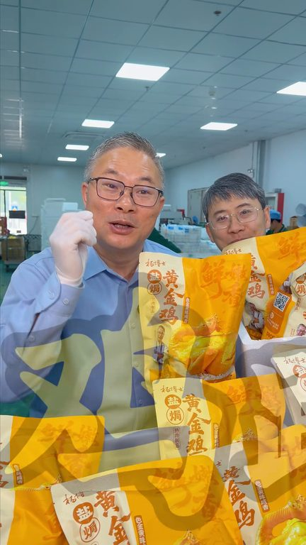
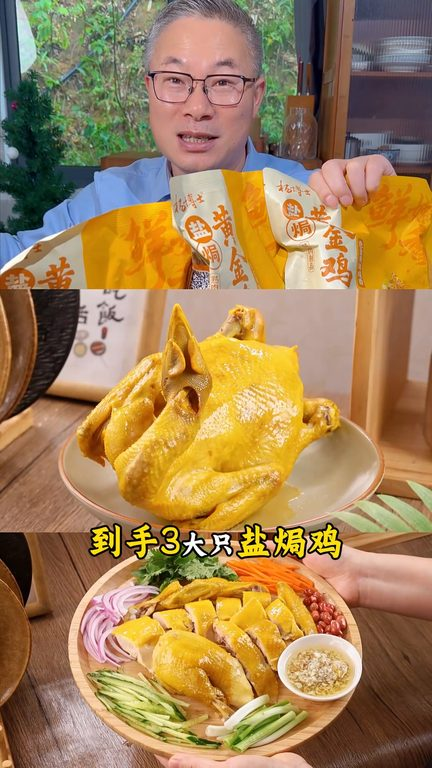
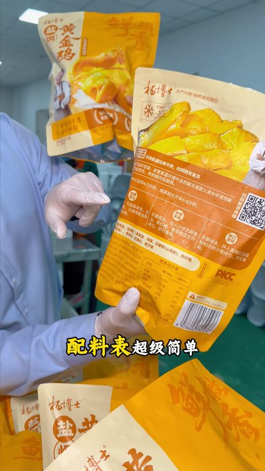
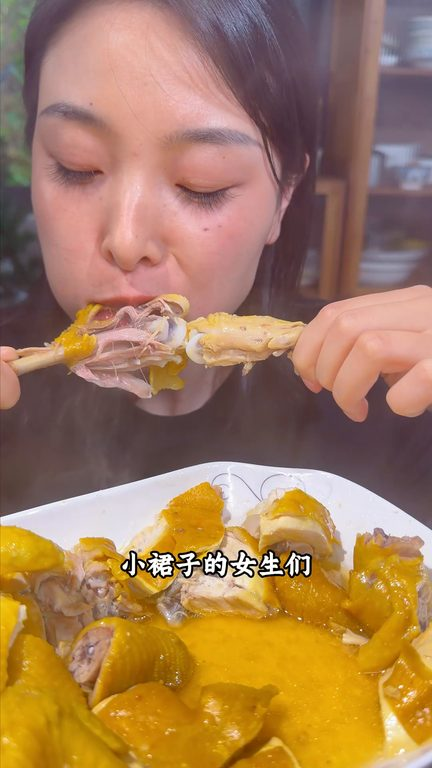

TOP 1 · 代表素材深度拆解
核心放量 点击承压
视频为原始素材 HTTPS 链接；点击后加载，建议在网络环境良好时播放。
22.3万素材消耗
2.34%CTR
8.6%类目消耗占比
-1.06pp较类目均值
表现判断
该素材是类目内第 1 名，属于“核心放量”；CTR 低于类目均值。消耗体现承接规模，CTR 体现首屏与定向效率，两项应结合判断，不能仅以单指标下结论。
表达标签
口播三段式证据
开场钩子你可千万别拿成年卖的加了科技很活的这种研究机跟我比我怕你吃过一次我们三年养的这种就不是成年的研究机了管理器嘴残你称的新品上是简陋价多成两家这次疯了我跟你说内部员工都抢诈的
中段论证只要一张红麦包到手三大只研究机60多吃土鸡板研究机你说划不划算你去看看吧有手就行蒸过微波炉盯个八分钟就是黄金颤颤的广式研究机咸中带鲜纯齿流香比外卖快10倍价格只要饭店的三分之一不是所有的研究机都敢用三上的主机不是所有的研究机都敢用鲜鸡卤子不是所有的研究机都保证没有科技很多所以你看到杨博士研究黄金机熟知品我的头像做的是净重
结尾转化加上植物的香腥料就是这么简单比外卖还健康活鸡卤子没有香精色素香精防护剂比饭店还干净但是只要饭店一半到三分之一的价格吃的比饭店还要高的品质这就是我们的研究机不管你是跟我一样管理生产还是夏天想穿漂亮小裙子的女生或者孩子营养机的时候咱怎么吃这么吃
有效点
- 消耗占比 8.6% 说明具备投放承接能力，但 CTR 较类目均值低 1.06pp
- 口播包含明确到手机制或直播间指令，转化路径较完整
迭代动作
- 重做前 3–5 秒：结果前置、缩短背景铺垫，并把核心人群直接写进首屏字幕
- 中段每 5–8 秒补一次画面变化或证据点，避免同景口播造成信息疲劳
- 促销口径与资质信息保持同屏可验证，结尾只保留一个明确行动指令
合规关注

钩子建立 · 3.4s

场景/问题展开 · 25.6s

卖点证据 · 59.0s

转化收口 · 81.2s
查看完整口播摘要
你可千万别拿成年卖的加了科技很活的这种研究机跟我比我怕你吃过一次我们三年养的这种就不是成年的研究机了管理器嘴残你称的新品上是简陋价多成两家这次疯了我跟你说内部员工都抢诈的正常88一只三只是不是要200多这次疯了感恩你们两只你拿走再给一只只要一张红麦包到手三大只研究机60多吃土鸡板研究机你说划不划算你去看看吧有手就行蒸过微波炉盯个八分钟就是黄金颤颤的广式研究机咸中带鲜纯齿流香比外卖快10倍价格只要饭店的三分之一不是所有的研究机都敢用三上的主机不是所有的研究机都敢用鲜鸡卤子不是所有的研究机都保证没有科技很多所以你看到杨博士研究黄金机熟知品我的头像做的是净重一斤六两斤以上配料表超级简单就是我们选用的盐盐鸡粉加上植物的香腥料就是这么简单比外卖还健康活鸡卤子没有香精色素香精防护剂比饭店还干净但是只要饭店一半到三分之一的价格吃的比饭店还要高的品质这就是我们的研究机不管你是跟我一样管理生产还是夏天想穿漂亮小裙子的女生或者孩子营养机的时候咱怎么吃这么吃